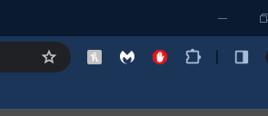
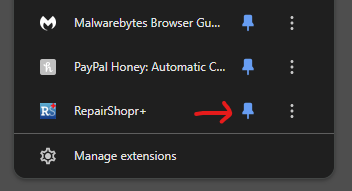
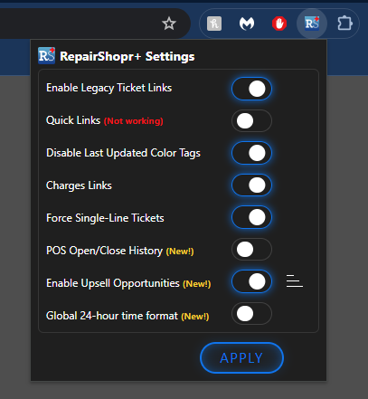

Thanks for installing the RepairShopr+ extension!
Open the extensions menu (🧩) at the top right of your chrome window

Click the 📌 for RepairShopr+

Click the RepairShopr+ icon and configure your settings

Current Version: RepairShopr+ Version 1.5 (2/14/24)
- NEW FEATURE: Item Upsell in Add/View Charges Widget
- Items added to the upsell config menu will appear as buttons at the bottom of the add/view charges widget
- The upsell config menu is located next to the "Enable Upsell Opportunities" toggle in the extension popup window
- NEW FEATURE: Site-wide 24-hour Time
- All AM/PM times will be converted to their 24 hour equivalent format
- Other Improvements
- Added a welcome page for new installs with instructions on how to use the extension
- Added an update page for existing users that showcases new features
- Other small fixes